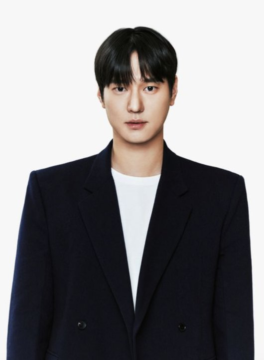
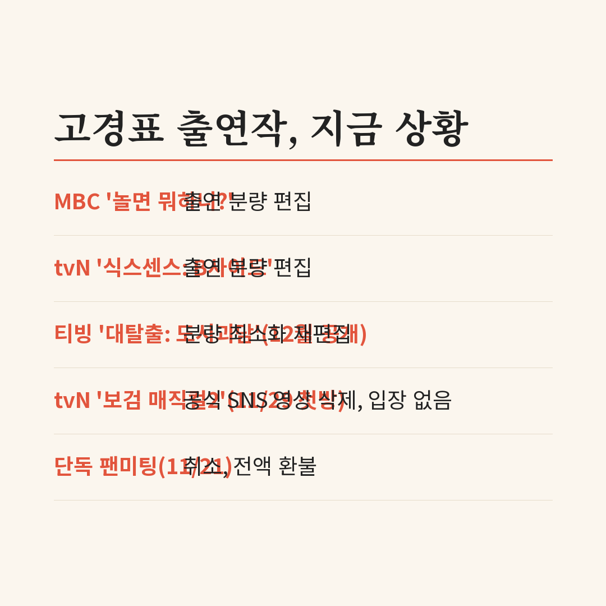
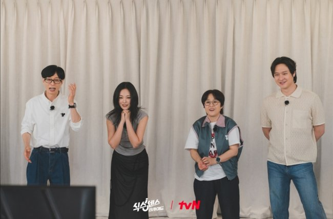
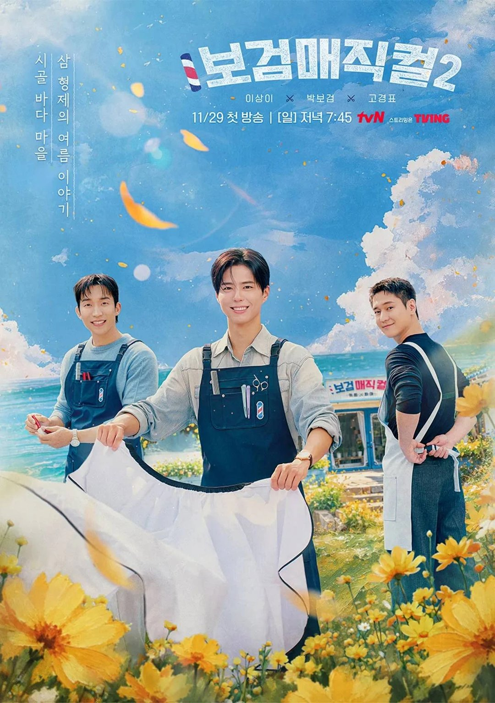
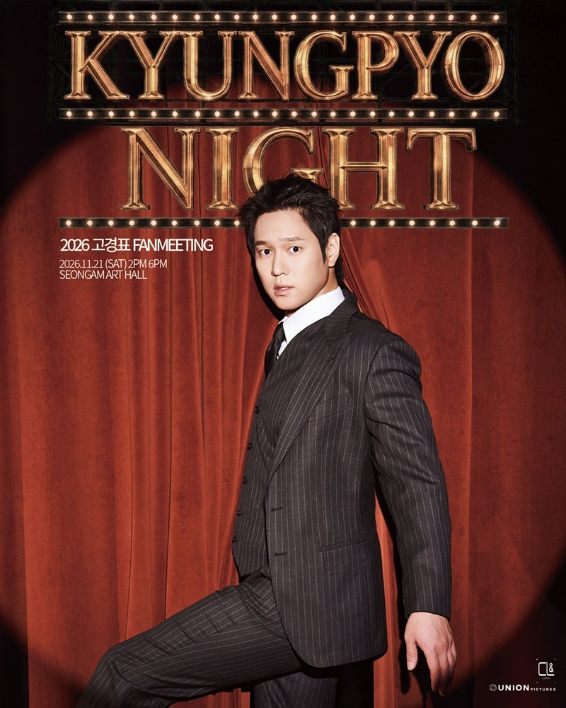
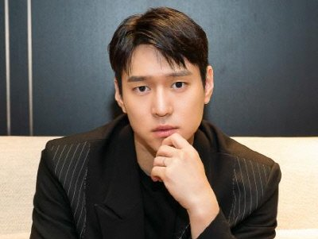

"술을 마시고 운전대를 잡은 건 전적으로 제 잘못"이라는 사과문이 올라온 지 사흘이 지났어요. 그사이 고경표가 나오던 예능 네 편과 단독 팬미팅이 하나씩 정리되고 있어요. 지금 어떤 프로그램이 어떤 상태인지부터 짚어 볼게요.
📷 사진 1 자리
▲ 배우 고경표 공식 프로필 · 사진=씨엘엔컴퍼니 제공
출연작마다 다른 조치, 한눈에 보기
📷 사진 2 자리
MBC '놀면 뭐하니?'와 tvN '식스센스: B사이드'는 고경표가 나온 분량을 편집해 내보냈어요. 12월 공개 예정인 티빙 '대탈출: 도시괴담'도 분량을 최대한 줄이는 쪽으로 다시 편집해요.
📷 사진 3 자리
▲ tvN '식스센스: B사이드' 출연진 · 사진=tvN 제공
29일 첫 방송하는 tvN '보검 매직컬2'는 아직 공식 방침을 따로 내지 않았어요. 다만 공식 SNS에 올렸던 고경표 등장 영상을 지웠어요.
📷 사진 4 자리
▲ 11월 29일 첫 방송하는 tvN '보검 매직컬2' 포스터 · 사진=tvN 제공
정리하면 편집 결정이 이미 난 프로그램이 세 편, 공식 입장 없이 영상만 내린 프로그램이 한 편이에요. 첫 방송까지 열하루가 남은 '보검 매직컬2'가 어떻게 나올지가 남은 변수예요.
▶ 영상 1 자리
21일 팬미팅은 취소, 표는 전액 환불
21일 열릴 예정이던 고경표 단독 팬미팅도 취소됐어요. 팬미팅 제작사가 16일 공지로 취소를 알렸어요.
📷 사진 5 자리
▲ 취소된 고경표 단독 팬미팅 'KYUNGPYO NIGHT' 포스터 · 사진=유니온픽처스 제공
이미 예매한 표는 전액 환불돼요. 환불 일정과 방법은 예매처 공지를 확인하는 게 정확해요.
11월 14일 새벽, 무슨 일이 있었나
고경표는 14일 오전 3시 30분쯤 서울 마포구 동교동에서 술을 마신 채 차를 몰다 작업 중이던 청소차와 부딪쳤어요. 당시 혈중알코올농도는 0.150%로 면허 취소 기준을 넘었어요.
📷 사진 6 자리
▲ 배우 고경표 · 사진=싸이더스 제공
이 사고로 새벽에 일하던 환경미화원 한 명이 가벼운 상처를 입었어요.
사과문에서 직접 밝힌 것
고경표는 다음 날인 15일 SNS에 장문의 사과문을 올렸어요. 피해를 본 분들께 먼저 사과하고, 누군가 크게 다칠 수도 있었던 무책임한 행동이었다고 적었어요.
▶ 영상 2 자리
경찰 조사에 성실히 응하고 피해 회복과 처분에 따른 책임을 지겠다고도 했어요. 그리고 "예정된 활동은 모두 중단하겠다"고 밝혔어요. 위 출연작 조치들은 이 선언 뒤에 이어진 거예요.
사과문 한 장에 예능 네 편의 편집과 팬미팅 취소가 줄줄이 따라왔다는 점에서, 음주운전이 본인 한 사람의 일로 끝나지 않는다는 게 숫자로 드러나요. 남은 건 '보검 매직컬2'인데, 첫 방송 전에 제작진이 편집 방침을 공식으로 밝히는지가 다음에 확인할 대목이에요.
고경표는 예정된 활동을 모두 멈췄고, 출연 예능은 분량을 편집하거나 줄여 방송하고 있어요. '보검 매직컬2'는 11월 29일 tvN에서 첫 방송해요.
함께 보면 좋은 이슈





